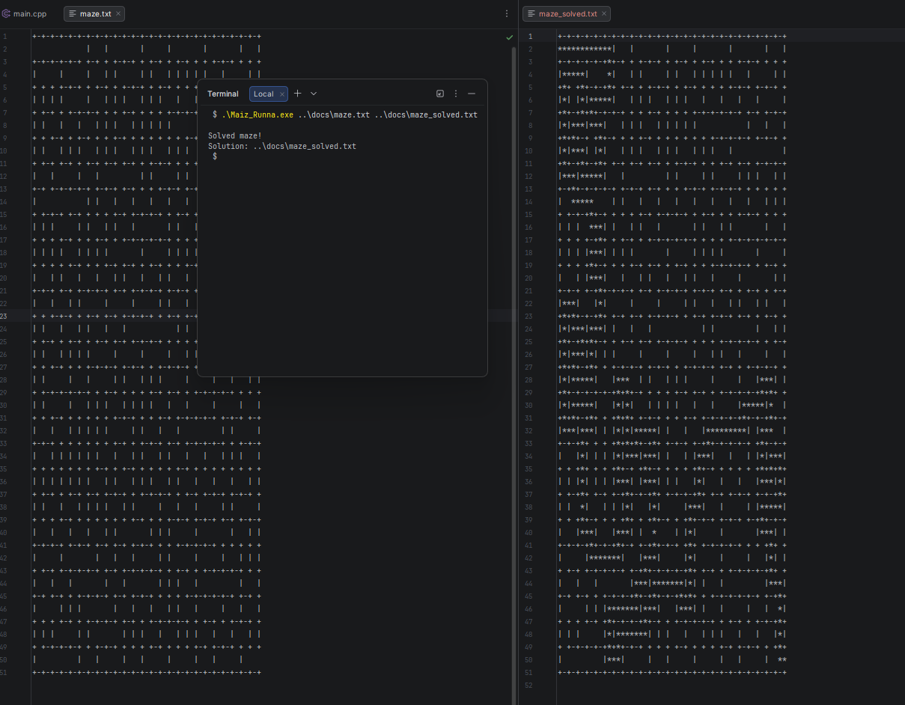
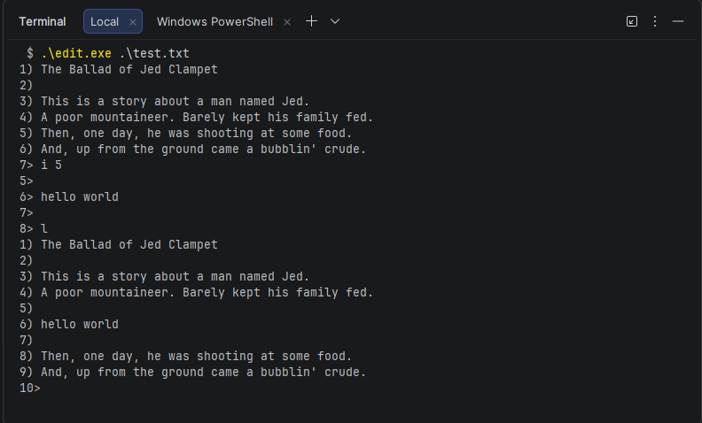

Technical Skills
Programming
- Python
- Java / Kotlin
- C / C++
.NET Development
- C#
- .NET Framework / .NET
- WPF / Windows Forms
Systems & Tools
- Linux
- Windows Server
- Git & GitHub
Databases
- SQL
- SQLite
- MySQL
Work Samples
The following projects demonstrate how I have applied my technical skills to real assignments and independent projects.

Automated Maze Solver
Engineered a maze-solving application that implements a Stack-based backtracking algorithm. The system navigates complex coordinate grids, utilizing a stack to track the current path and retreat from dead ends to efficiently find a valid exit.

Linked List Line Editor
Built a terminal-based text editor utilizing a Linked List to manage text lines. This implementation allows for efficient $O(1)$ insertions and deletions at any position, providing a lightweight alternative to buffer-based editing for large files.

Java Management System
Developed structured Java applications using classes, methods, and algorithms to solve logic-based problems. Demonstrates strong understanding of OOP principles including encapsulation, inheritance, and polymorphism.

Responsive Bar Website
Built a responsive website using HTML, CSS, and JavaScript with a focus on usability and layout. Demonstrates frontend skills including responsive design and interactive UI components.

Mobile Image Database App
Created a mobile application that stores and retrieves images from a database, demonstrating data handling skills. Built with practical focus on persistent storage and mobile UI patterns.